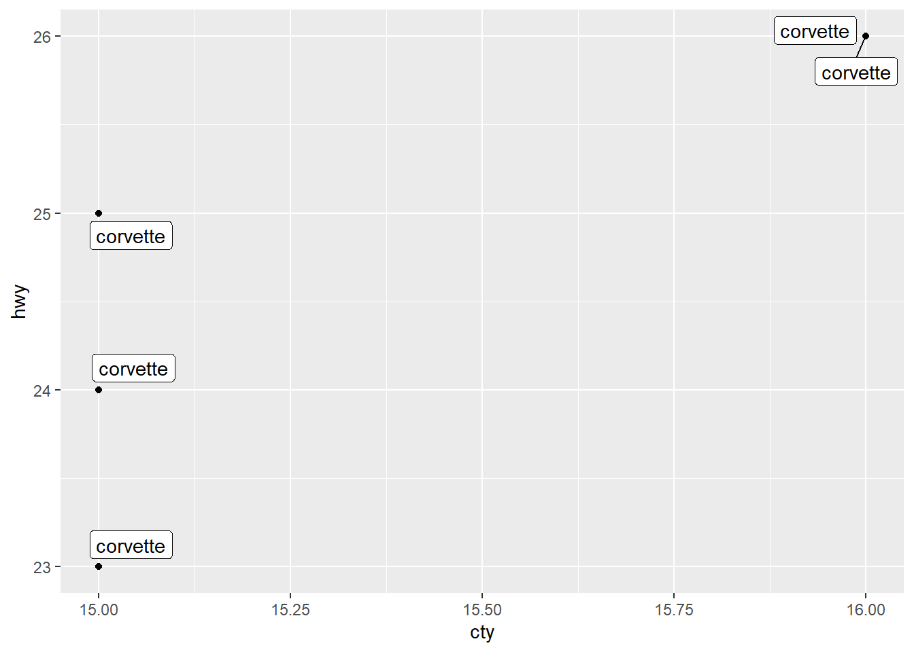
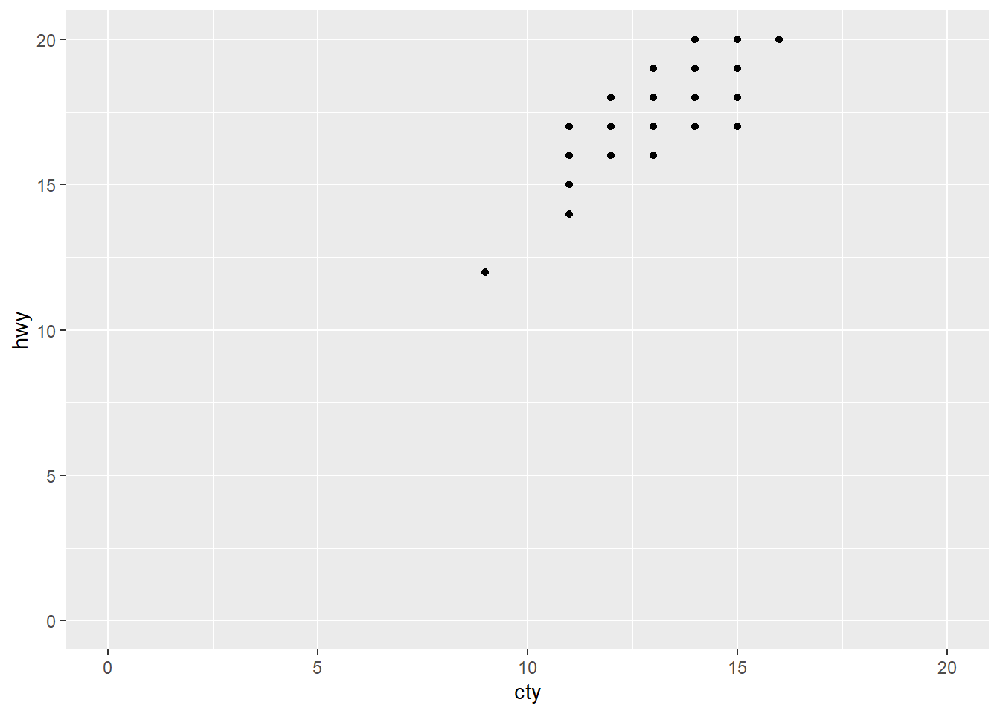
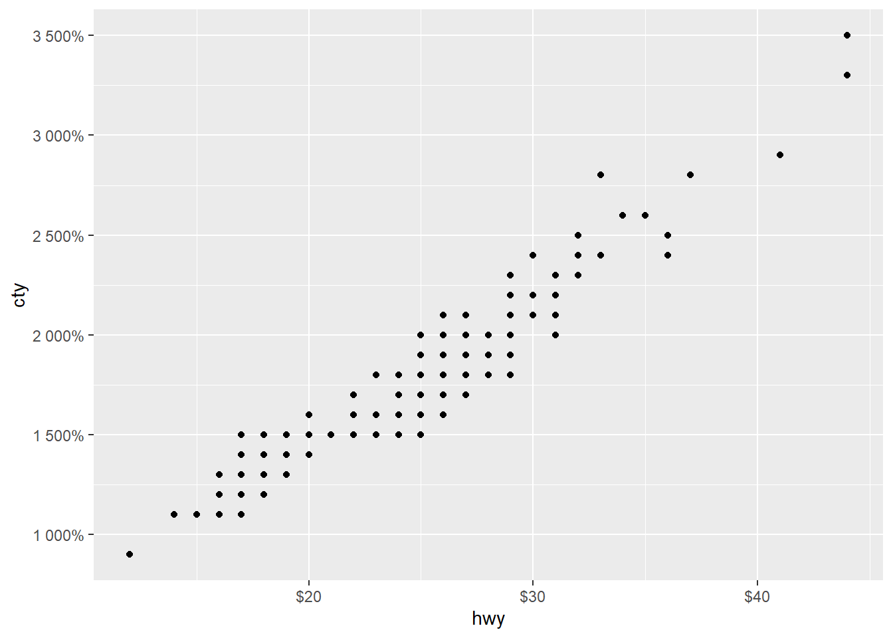

Below are a number of useful functions to improve the attractiveness of your plots.
Draw a line or box on the chart.
ggplot(data = mpg) +
geom_point(mapping = aes(x = cty, y = hwy)) +
geom_vline(xintercept = 20) +
geom_hline(yintercept = 30) +
geom_rect(xmin = 20, xmax = 25, ymin = 25, ymax = 30,
alpha = 0.005,
fill = 'green')
Add labels with geom_label_repel. There is also a geom_text, but it will plot labels on top of the data points.
library(ggrepel)
mpg_2seater <- filter(mpg, class == '2seater')
ggplot(data = mpg_2seater) +
geom_point(mapping = aes(x = cty, y = hwy)) +
geom_label_repel(mapping = aes(x = cty, y = hwy, label = model))We can add a variety of labels to a plot.
ggplot(data = mpg) +
geom_bar(mapping = aes(y = manufacturer)) +
labs(title = 'Main title',
subtitle = 'Subtitle title',
caption = 'Caption at bottom of chart') +
xlab('Label for x axis') +
ylab('Label for y axis')There are some nice options for themes. Some include:
ggplot(data = mpg) +
geom_point(mapping = aes(x = cty, y = hwy)) +
theme_void()
Set a max/min for an axis.
ggplot(data = mpg) +
geom_point(mapping = aes(x = cty, y = hwy)) +
xlim(0, 20) +
ylim(0, 20) ## Warning: Removed 145 rows containing missing values (`geom_point()`).We can customize the axis scales.
You need to match the type of scale to your datatype. Is the data continuous (ie., a number) or discrete (generally text)?
A discrete scale handles a vector of text values. Set custom
labels using a vector.
ggplot(data = mpg) +
geom_point(mapping = aes(y = class, x = hwy)) +
scale_y_discrete(
labels = c('2 Seater', 'Compact Car', 'Midsize', 'Minivan',
'Pickup', 'Sub-compact', 'SUV'),
name = 'Car Classification')A continuous scale is for a series of numbers.
We can set custom breaks, as well as the min/max.
ggplot(data = mpg) +
geom_point(mapping = aes(y = hwy, x = hwy)) +
scale_x_continuous(n.breaks = 5, limits = c(20, 30)) +
scale_y_continuous(breaks = c(15, 20, 25))## Warning: Removed 100 rows containing missing values (`geom_point()`).#### Label formatting
Breaks also may need formatting to fix labels.
accuracy = 0.1 to round to 10%, or
0.01 to round to 1%.ggplot(data = mpg) +
geom_point(mapping = aes(y = cty, x = hwy)) +
scale_x_continuous(labels = scales::label_dollar()) +
scale_y_continuous(labels = scales::label_percent(accuracy = 1))Dates/datetimes are continuous values, but don’t use a continuous
scale. Use scale_x_date and scale_x_datetime
for additional options.
Our main options are:
labels = scales::label_date("format string")
"format string" options by using F1 on label_date,
and go to its format section, and click on strptime().
Scroll down for a list of options."%Y-%m-%d" shows as '2023-01-09'"%H:%M:%S" shows as '02:00:00'date_breaks = "number periods"
"number period" is a combination of a number and a
period (such as hour, minute, year, etc…)1 month3 hourslimits = c(start_date, end_end)limits = c( ymd('2023-01-01'), ymd('2023-01-30'))`limits = c( ymd_hm('2023-01-01 06:00am'), ymd_hm('2023-01-01 06:00pm')See ggplot’s label_date for help on the scale.
See lubridate for help on dealing with dates.
library(lubridate)
date_tibble <- tibble(
open = c(ymd_hm('2023-01-01 8:00am'),
ymd_hm('2023-01-02 9:00am'),
ymd_hm('2023-01-09 3:30pm'),
ymd_hm('2023-01-25 5:45pm'))
)
ggplot(data = date_tibble) +
geom_point(mapping = aes(y = open, x = (open))) +
scale_y_datetime(labels = scales::label_date("%Y-%m-%d"),
date_breaks = '1 week',
limits = c(
ymd_hm('2023-01-01 00:00'),
ymd_hm('2023-02-15 00:00'))
) +
scale_x_datetime(labels = scales::label_time("%H:%M:%S"),
date_breaks = '100 hours')